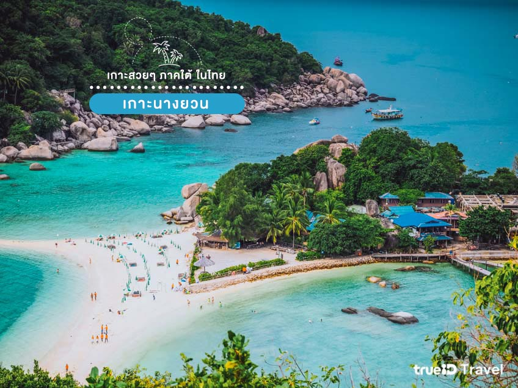
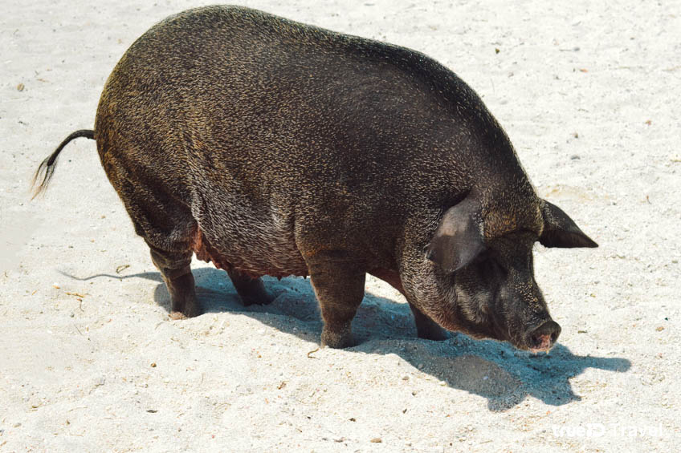

เกาะมัดสุม สุราษฎร์ธานี
หลายคนที่ฝันอยากไปเที่ยว บาฮามาส เกาะสวยกลางทะเล ที่เต็มไปด้วยเหล่าหมูทะเลแล้วล่ะก็ ประเทศไทยก็มี เกาะหมูเช่นกัน นั่นก็คือ เกาะมัดสุม สุราษฎร์ธานี ซึ่งเป็นเกาะสวยที่ตั้งอยู่ใกล้ๆกับเกาะสมุยนั่นเอง โดยเราสามารถนั่งเรือจากเกาะสมุย มาถึงเกาะมัดสุมจะใช้เวลาประมาณ 15-25 นาที เหมือนเป็นเกาะบาฮามาสเลยทีเดียว
ไฮไลท์ของเกาะนี้ นอกจากน้ำทะเลที่สวยและใสปิ๊งๆ หาดทรายขาวละเอียดสวยงามแล้ว ก็คือ น้องหมูนั่นเอง จะมีหมูที่อยู่บนเกาะออกมาต้อนรับนักท่องเที่ยวตามหายชาดให้เราได้ใกล้ชิดwได้ถ่ายรูปสวยๆกัน